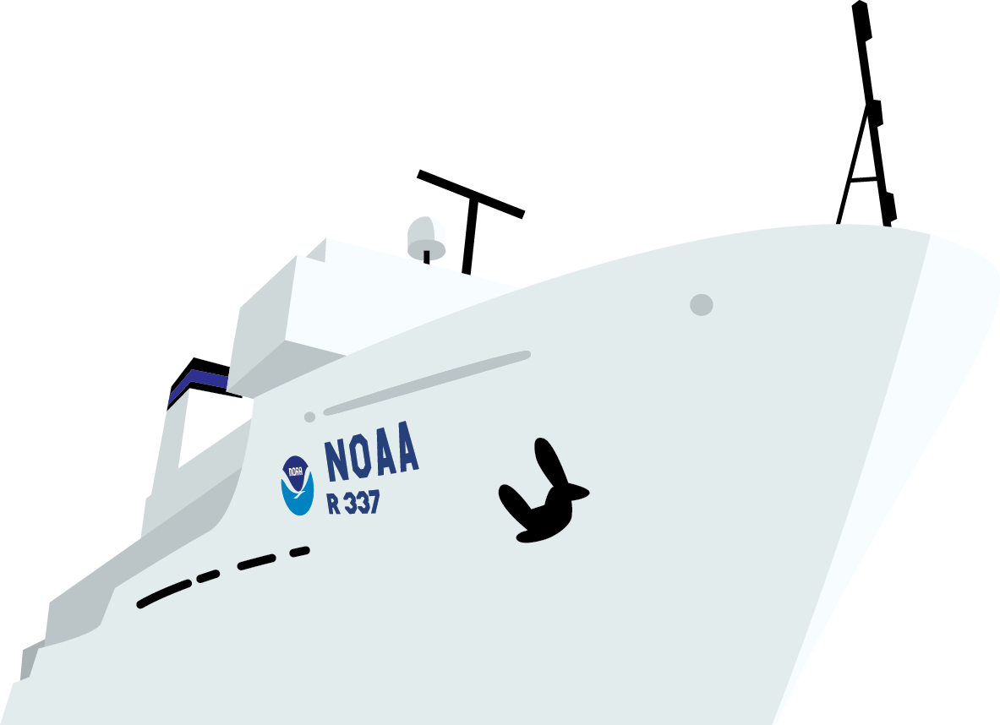
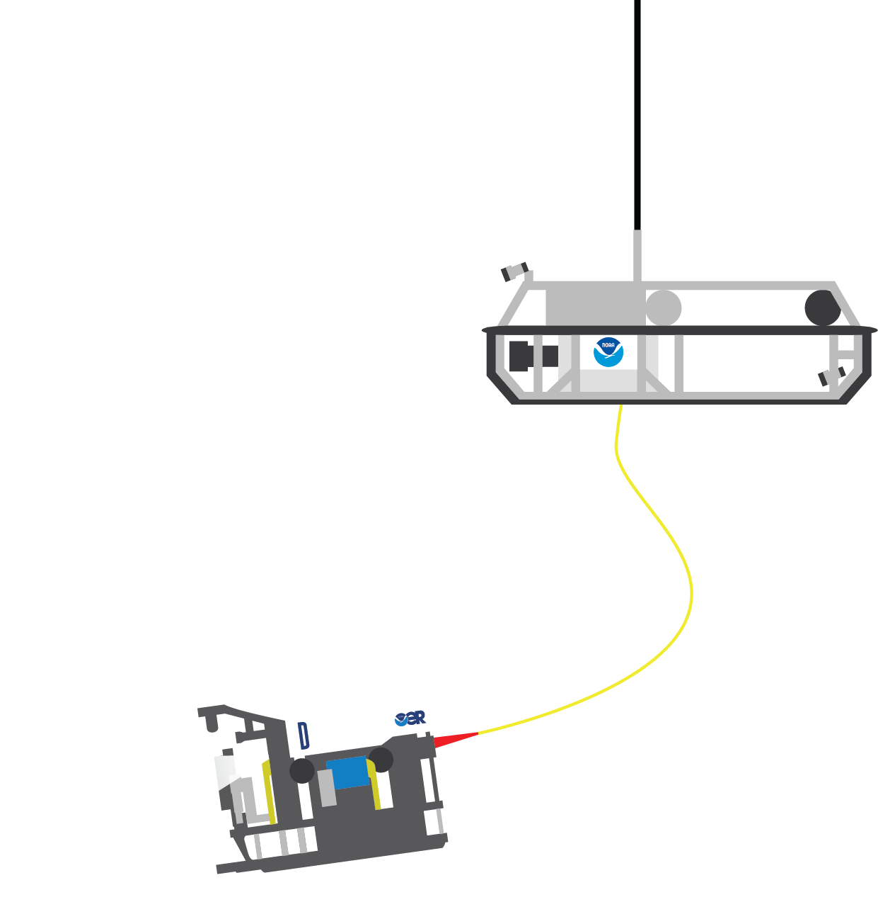

The ocean covers more than 70% of our planet, yet over 80% of it remains unexplored. Hidden beneath its vast waters are mysterious ecosystems, underwater mountains, and thousands of species that scientists have never seen before.
| Features | Information |
|---|---|
| Ocean Coverage | Covers about 71% of Earth's surface |
| Unexplored Area | Over 80% of the ocean remains unexplored |
Ocean exploration plays a vital role in understanding our planet. Scientists study the deep sea to discover new species, investigate underwater ecosystems, and learn how oceans influence climate and weather patterns. As technology advances, researchers continue to uncover fascinating secrets hidden beneath the waves, making the ocean one of Earth's greatest frontiers of discovery.

